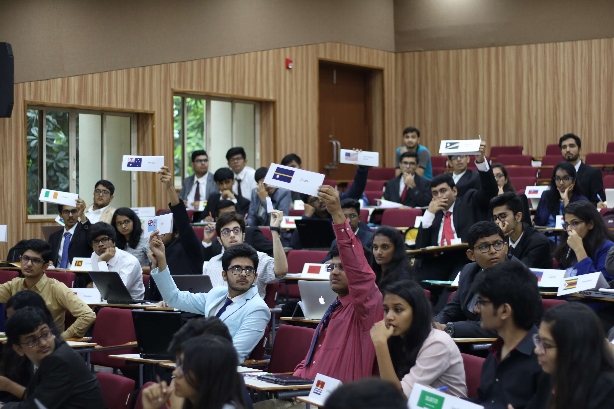

D A M U N C
D A I I C T ,
G A N D H I N A G A R
5 T H O C T - 6 T H O C T
ABOUT DAIICT
"Technology shapes the society and society shapes technology" - Robert White
Dhirubhai Ambani Institute of Information and Communication Technology (DA-IICT), Gandhinagar represents Wave-4 of educational innovation in Gujarat. It is the only advanced research and teaching Institute named after the Late Dhirubhai Ambani, founder of Reliance Group.
DA-IICT began with an intake of 300 undergraduate students for its Bachelor of Technology (B.Tech.) program in Information and Communication Technology (ICT). Since then, it has expanded to include postgraduate courses such as Master of Technology (M. Tech.) , Master of Science (M.Sc) in Information Technology, Master in Design (M. Des.), and a Doctorate of Philosophy(Ph. D) a five-year Doctorate program.
Students at DAIICT get exposed to a world of scientific research that one does not get to experience until their Graduate studies, all done through a combination of unique courses and project-based learning. The ICT embodies the convergence of Computer and Communication systems and has obtained wide acceptance as a distinct discipline. It manages to find a trade-off between the breadth demanded by comprehension at the systems level and the depth desired by scientific understanding of the fundamentals.
That being said a student not only learns the technological aspect of the worldly education but also the humanitarian and social perspective which prepares them for their upcoming responsibilities as a responsible citizen. This also gives them the insight on subjects that one might not learn in conventional engineering colleges so that they know what they are getting into when they choose various fields to pursue for the after graduation studies
ABOUT DAMUNC
How it all began?
For the past 7 years, DAIICT has held Intra MUNs and over the years, there is a significant growth in the number of people who want to be a part of the world of MUN-ing and learn. The want to culminate the thoughts of everyone that can do so had driven us to bring this conference to life. Why restrict a committee when a plethora of individuals with various educational backgrounds can contribute to a better judgment?
Why should you choose DAMUNC?
"Sustainable development is the peace policy of the future."
This belief has pushed us to work on hosting the first edition of DAMUNC. DAMUNC is an intercollegiate conference, a two-day simulation of the United Nations Committee that aims to answer the pertinent questions that have been discussed all the time but have not provided justifiable answers. The students of today are citizens of tomorrow. They will fulfill multiple roles as they grow up and the most important would be being responsible citizens of their countries and to bring forth a positive change in the world, one step at a time. This conference aims to bring out their innate passion and charisma as they step into their roles as UN representative and members of international bodies under the UN and understand various perspectives, learn and grow and hopefully find a solution to the situation and grow closer to the universal peace that the world aims.
GALLERY

- 